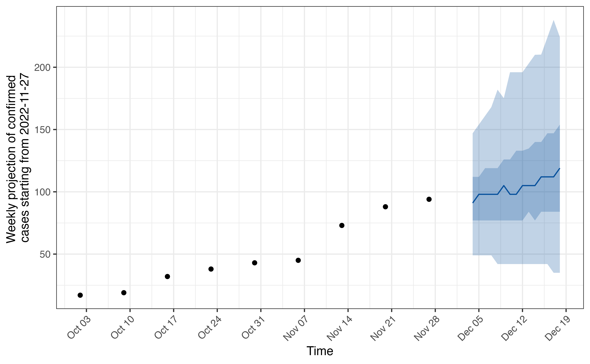
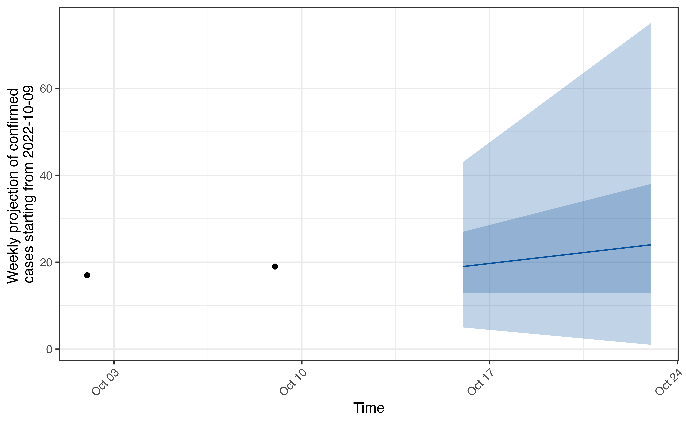
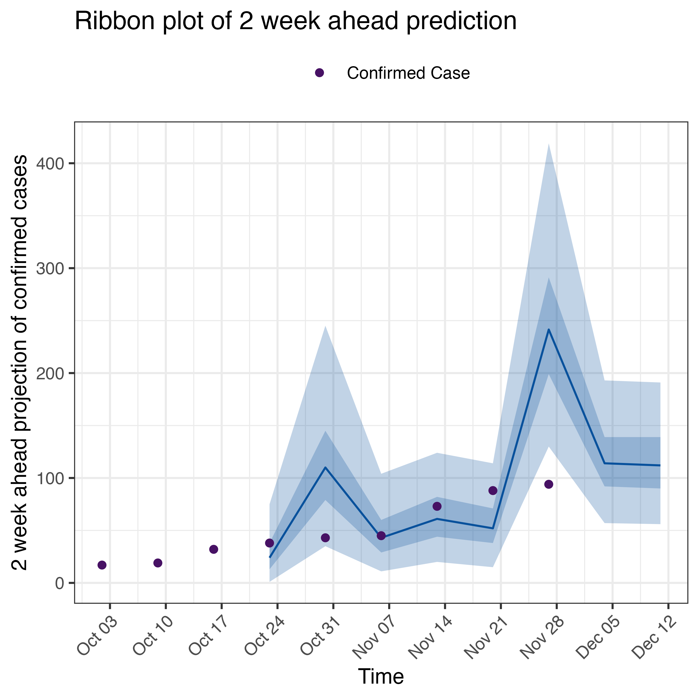
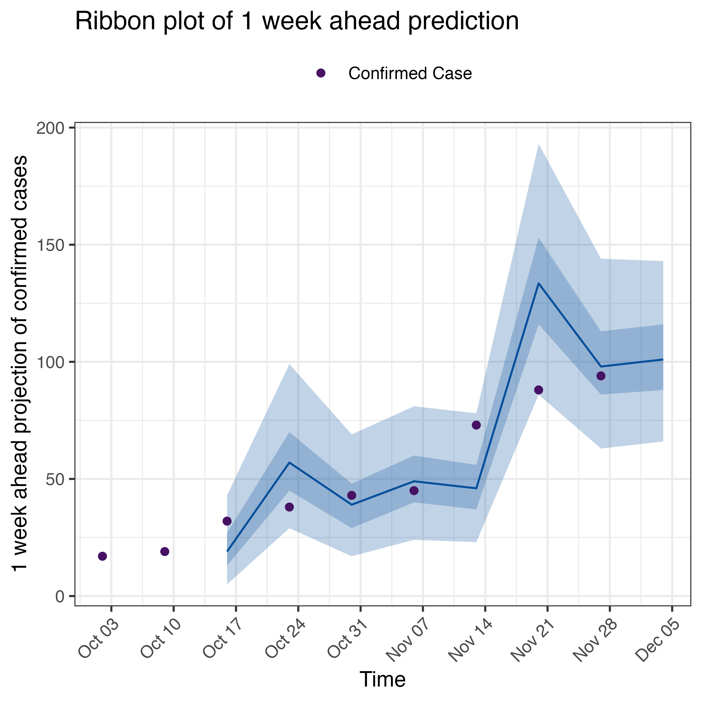

vriforecasting-model-fitting-for-forecasts.Rmd
library(vriforecasting)This vignette provides a short demonstration of the model fitting
functions in vriforecasting which extend the functionality
and wrap the estimate_R function from the
EpiEstim package to produce short-term forecasts.
For this short demonstration, we will use the PLOVER weekly data for
Influenza A, which is provided with the vriforecasting
package. We then use the get_weekly_plover and
get_weekly_plover_by_date_type functions to transform the
PLOVER data into a dataset with two columns: date and
confirm in accordance to format accepted by the model
fitting functions.
weekly_plover_data <- get_weekly_plover(plover_data)
disease_type <- "flu_a"
weekly_plover_date_type <- get_weekly_plover_by_date_type(
weekly_plover_data = weekly_plover_data,
type = disease_type,
start_date = "2022-10-01",
end_date = "2022-12-01")
head(weekly_plover_date_type)
#> # A tibble: 6 × 2
#> date confirm
#> <date> <dbl>
#> 1 2022-10-02 17
#> 2 2022-10-09 19
#> 3 2022-10-16 32
#> 4 2022-10-23 38
#> 5 2022-10-30 43
#> 6 2022-11-06 45The model to estimate the reproduction number using
EpiEstim can be fit using the
fit_epiestim_model function as follows:
mod_fit <- fit_epiestim_model(data = weekly_plover_date_type, type = "flu_a")
#> Estimated R for iteration: 1
#> Reconstructed incidence for iteration: 1
#> Estimated R for iteration: 2
#> Reconstructed incidence for iteration: 2
#> Estimated R for iteration: 3
#> Reconstructed incidence for iteration: 3
#> Estimated R for iteration: 4
#> Reconstructed incidence for iteration: 4
#> Estimated R for iteration: 5
#> Reconstructed incidence for iteration: 5
#> Estimated R for iteration: 6
#> Reconstructed incidence for iteration: 6
#> Estimated R for iteration: 7
#> Reconstructed incidence for iteration: 7
#> Estimated R for iteration: 8
#> Reconstructed incidence for iteration: 8
#> Estimated R for iteration: 9
#> Reconstructed incidence for iteration: 9
#> Estimated R for iteration: 10
#> Reconstructed incidence for iteration: 10
#> R estimation starts on day 8
head(mod_fit)
#> $R
#> t_start t_end Mean(R) Std(R) Quantile.0.025(R) Quantile.0.05(R)
#> 1 8 14 1.152583 0.2403301 0.7306384 0.7877399
#> 2 9 15 1.180219 0.2411041 0.7558886 0.8135439
#> 3 10 16 1.214957 0.2422085 0.7874804 0.8458341
#> 4 11 17 1.247874 0.2418035 0.8197549 0.8785024
#> 5 12 18 1.277499 0.2396764 0.8516633 0.9104323
#> 6 13 19 1.304243 0.2360330 0.8833089 0.9417571
#> 7 14 20 1.328500 0.2310987 0.9147423 0.9725622
#> 8 15 21 1.350409 0.2250681 0.9458096 1.0027222
#> 9 16 22 1.309985 0.2132907 0.9257392 0.9799750
#> 10 17 23 1.259935 0.2011878 0.8968637 0.9482540
#> 11 18 24 1.216296 0.1912229 0.8707381 0.9197563
#> 12 19 25 1.178977 0.1832342 0.8475275 0.8946192
#> 13 20 26 1.145249 0.1767090 0.8254062 0.8708937
#> 14 21 27 1.112884 0.1712722 0.8028141 0.8469272
#> 15 22 28 1.080222 0.1666819 0.7785291 0.8214352
#> 16 23 29 1.077261 0.1652021 0.7780906 0.8206735
#> 17 24 30 1.082617 0.1649014 0.7838210 0.8263893
#> 18 25 31 1.088795 0.1646199 0.7903256 0.8328894
#> 19 26 32 1.094132 0.1641046 0.7963993 0.8389028
#> 20 27 33 1.098675 0.1633661 0.8020729 0.8444631
#> 21 28 34 1.102700 0.1624489 0.8075412 0.8497756
#> 22 29 35 1.106416 0.1613874 0.8129530 0.8549980
#> 23 30 36 1.099570 0.1594524 0.8094910 0.8510820
#> 24 31 37 1.090549 0.1573650 0.8041551 0.8452431
#> 25 32 38 1.081983 0.1555053 0.7988855 0.8395211
#> 26 33 39 1.074161 0.1539123 0.7938967 0.8341407
#> 27 34 40 1.066818 0.1525474 0.7889942 0.8288979
#> 28 35 41 1.059697 0.1513755 0.7839861 0.8235913
#> 29 36 42 1.052619 0.1503742 0.7787336 0.8180763
#> 30 37 43 1.084371 0.1522882 0.8066341 0.8466136
#> 31 38 44 1.126854 0.1547230 0.8441959 0.8849937
#> 32 39 45 1.169883 0.1562043 0.8839340 0.9253410
#> 33 40 46 1.210597 0.1563855 0.9236451 0.9653514
#> 34 41 47 1.248342 0.1552866 0.9626735 1.0043622
#> 35 42 48 1.282760 0.1530099 1.0005086 1.0418761
#> 36 43 49 1.313493 0.1496865 1.0365885 1.0773533
#> 37 44 50 1.279843 0.1421529 1.0164706 1.0553365
#> 38 45 51 1.233764 0.1341348 0.9849373 1.0217282
#> 39 46 52 1.192199 0.1274060 0.9556226 0.9906557
#> 40 47 53 1.156109 0.1219548 0.9294899 0.9630867
#> 41 48 54 1.123399 0.1174836 0.9049832 0.9373879
#> 42 49 55 1.092181 0.1137574 0.8806461 0.9120410
#> 43 50 56 1.061005 0.1106174 0.8553199 0.8858440
#> 44 51 57 1.053270 0.1092393 0.8500896 0.8802555
#> 45 52 58 1.052291 0.1085947 0.8502538 0.8802626
#> 46 53 59 1.052210 0.1080716 0.8510949 0.8809788
#> 47 54 60 1.051666 0.1075289 0.8515115 0.8812639
#> 48 55 61 1.050628 0.1069641 0.8514791 0.8810926
#> 49 56 62 1.049264 0.1063948 0.8511328 0.8806049
#> 50 57 63 1.047714 0.1058351 0.8505852 0.8799175
#> Quantile.0.25(R) Median(R) Quantile.0.75(R) Quantile.0.95(R)
#> 1 0.9826946 1.135922 1.304327 1.574268
#> 2 1.0099151 1.163842 1.332687 1.602769
#> 3 1.0440288 1.198900 1.368398 1.638862
#> 4 1.0774095 1.232291 1.401367 1.670412
#> 5 1.1087301 1.262542 1.429976 1.695595
#> 6 1.1382506 1.290032 1.454756 1.715210
#> 7 1.1661993 1.315124 1.476229 1.730071
#> 8 1.1925706 1.337926 1.494648 1.740682
#> 9 1.1605211 1.298427 1.446858 1.679424
#> 10 1.1190414 1.249243 1.389180 1.608094
#> 11 1.0824471 1.206289 1.339242 1.546972
#> 12 1.0507670 1.169498 1.296859 1.495672
#> 13 1.0216333 1.136174 1.258977 1.450566
#> 14 0.9930814 1.104111 1.223128 1.408773
#> 15 0.9636205 1.071661 1.187497 1.368215
#> 16 0.9617172 1.068828 1.183618 1.362618
#> 17 0.9673077 1.074256 1.188817 1.367368
#> 18 0.9737093 1.080510 1.194854 1.372966
#> 19 0.9794345 1.085938 1.199902 1.377312
#> 20 0.9845247 1.090589 1.204015 1.380475
#> 21 0.9892225 1.094733 1.207497 1.382804
#> 22 0.9937141 1.098579 1.210579 1.384570
#> 23 0.9882392 1.091873 1.202514 1.374320
#> 24 0.9806912 1.082989 1.192169 1.361644
#> 25 0.9734373 1.074543 1.182422 1.349829
#> 26 0.9667367 1.066819 1.173585 1.339229
#> 27 0.9603523 1.059555 1.165370 1.329512
#> 28 0.9540528 1.052498 1.157497 1.320362
#> 29 0.9476737 1.045467 1.149772 1.311561
#> 30 0.9781434 1.077250 1.182840 1.346420
#> 31 1.0189987 1.119780 1.227001 1.392844
#> 32 1.0610825 1.162938 1.271115 1.438116
#> 33 1.1017710 1.203869 1.312091 1.478791
#> 34 1.1403929 1.241909 1.349282 1.514268
#> 35 1.1765116 1.276682 1.382385 1.544381
#> 36 1.2096740 1.307812 1.411121 1.569016
#> 37 1.1813119 1.274584 1.372643 1.522290
#> 38 1.1408390 1.228906 1.321395 1.462371
#> 39 1.1039719 1.187663 1.275483 1.409213
#> 40 1.0716831 1.151824 1.235865 1.363750
#> 41 1.0420845 1.119306 1.200252 1.323371
#> 42 1.0134536 1.088234 1.166607 1.285786
#> 43 0.9844489 1.057163 1.133374 1.249271
#> 44 0.9776772 1.049496 1.124750 1.239160
#> 45 0.9771523 1.048558 1.123361 1.237054
#> 46 0.9774421 1.048513 1.122949 1.236056
#> 47 0.9772808 1.048003 1.122059 1.234562
#> 48 0.9766408 1.047000 1.120661 1.232538
#> 49 0.9756779 1.045670 1.118934 1.230184
#> 50 0.9745214 1.044153 1.117026 1.227661
#> Quantile.0.975(R)
#> 1 1.669153
#> 2 1.697568
#> 3 1.733636
#> 4 1.764508
#> 5 1.788297
#> 6 1.805900
#> 7 1.818242
#> 8 1.825922
#> 9 1.759889
#> 10 1.683750
#> 11 1.618701
#> 12 1.564278
#> 13 1.516653
#> 14 1.472800
#> 15 1.430552
#> 16 1.424341
#> 17 1.428913
#> 18 1.434335
#> 19 1.438413
#> 20 1.441220
#> 21 1.443122
#> 22 1.444404
#> 23 1.433385
#> 24 1.419892
#> 25 1.407355
#> 26 1.396139
#> 27 1.385901
#> 28 1.376309
#> 29 1.367138
#> 30 1.402564
#> 31 1.449699
#> 32 1.495289
#> 33 1.535770
#> 34 1.570562
#> 35 1.599550
#> 36 1.622682
#> 37 1.573098
#> 38 1.510192
#> 39 1.454545
#> 40 1.407078
#> 41 1.365070
#> 42 1.326143
#> 43 1.288520
#> 44 1.277896
#> 45 1.275541
#> 46 1.274337
#> 47 1.272631
#> 48 1.270390
#> 49 1.267817
#> 50 1.265081
#>
#> $method
#> [1] "parametric_si"
#>
#> $si_distr
#> t0 t1 t2 t3 t4 t5
#> 0.000000e+00 1.155723e-01 3.184104e-01 2.491845e-01 1.500367e-01 8.209107e-02
#> t6 t7 t8 t9 t10 t11
#> 4.270048e-02 2.152480e-02 1.062058e-02 5.159486e-03 2.477068e-03 1.178265e-03
#> t12 t13 t14 t15 t16 t17
#> 5.562911e-04 2.610285e-04 1.218524e-04 5.663395e-05 2.622295e-05 1.210213e-05
#> t18 t19 t20 t21 t22 t23
#> 5.569186e-06 2.556324e-06 1.170725e-06 5.350694e-07 2.441006e-07 1.111746e-07
#> t24 t25 t26 t27 t28 t29
#> 5.055743e-08 2.295956e-08 1.041334e-08 4.717463e-09 2.134806e-09 9.651019e-10
#> t30 t31 t32 t33 t34 t35
#> 4.358924e-10 1.967055e-10 8.870387e-11 3.995578e-11 1.799996e-11 8.088985e-12
#> t36 t37 t38 t39 t40 t41
#> 3.641909e-12 1.628386e-12 7.317924e-13 3.257838e-13 1.427969e-13 6.613599e-14
#> t42 t43 t44 t45 t46 t47
#> 2.240430e-14 2.223777e-14 8.548717e-16 0.000000e+00 0.000000e+00 0.000000e+00
#> t48 t49 t50 t51 t52 t53
#> 9.092727e-15 0.000000e+00 1.654232e-14 6.994405e-16 2.331468e-16 2.331468e-16
#> t54 t55 t56 t57 t58 t59
#> 0.000000e+00 0.000000e+00 0.000000e+00 0.000000e+00 0.000000e+00 0.000000e+00
#> t60 t61 t62 t63
#> 0.000000e+00 0.000000e+00 0.000000e+00 0.000000e+00
#>
#> $SI.Moments
#> Mean Std
#> 1 3.1 1.652061
#>
#> $dates
#> [1] 1 2 3 4 5 6 7 8 9 10 11 12 13 14 15 16 17 18 19 20 21 22 23 24 25
#> [26] 26 27 28 29 30 31 32 33 34 35 36 37 38 39 40 41 42 43 44 45 46 47 48 49 50
#> [51] 51 52 53 54 55 56 57 58 59 60 61 62 63
#>
#> $I
#> [1] 2.099899 2.200950 2.306865 2.417875 2.534229 2.656181 2.784001
#> [8] 2.346946 2.459886 2.578260 2.702331 2.832373 2.968673 3.111531
#> [15] 3.308549 3.660171 4.049161 4.479493 4.955558 5.482218 6.064850
#> [22] 5.030032 5.157368 5.287927 5.421792 5.559045 5.699773 5.844063
#> [29] 5.551749 5.738013 5.930526 6.129499 6.335147 6.547694 6.767373
#> [36] 6.105405 6.210084 6.316558 6.424857 6.535013 6.647058 6.761024
#> [43] 7.807182 8.550964 9.365606 10.257858 11.235114 12.305472 13.477802
#> [50] 11.866328 12.093943 12.325925 12.562357 12.803323 13.048912 13.299212
#> [57] 12.831905 13.025835 13.222695 13.422530 13.625386 13.831307 14.040341The function supports forecasting for SARS-CoV2, RSV and Influenza A
and B primarily but also provides functionality to forecast other
respiratory diseases. The type of viral respiratory disease to be
forecasted can be specified by the type argument, which
takes in the inputs rsv, covid,
flu_a and flu_b respectively. Any other
respiratory disease can be specified by setting
type = other. If type = other is set, a
user-specified mean_si and std_si must be
passed to the function as well.
The primary function used to fit and produce the short-term forecasts
is the forecast_time_period_epiestim function which wraps
the fit_epiestim_model function. This function can be used
to produce both daily and weekly forecasts using weekly sliding windows.
We first demonstrate how it can be used to produce daily forecasts for
14 days ahead. This is controlled by the ndays = 14
parameter.
The start_date_str argument should be used to specify
from which date in the dataset the forecasting should begin from. The
function automatically checks to see if the incidence count on the
specified start date is high enough to reliably estimate the
reproduction number. If this is not the case, the function throws a
warning which suggests an alternate start date.
The function provides progress updates as it is running about the current time period the model is being fit for.
time_period_result_daily <- forecast_time_period_epiestim(data =
weekly_plover_date_type, start_date_str = "2022-10-02", n_days = 15, type = "flu_a")
#> [1] "Current time period: 1 (2022-10-09)"
#> [1] "Current time period: 2 (2022-10-16)"
#> [1] "Current time period: 3 (2022-10-23)"
#> [1] "Current time period: 4 (2022-10-30)"
#> [1] "Current time period: 5 (2022-11-06)"
#> [1] "Current time period: 6 (2022-11-13)"
#> [1] "Current time period: 7 (2022-11-20)"
#> [1] "Current time period: 8 (2022-11-27)"The forecasts can then be plotted at all the sliding windows used
using the plot function which uses the output of
forecast_time_period_epiestim. The function takes in an
object of of class forecast_time_period_epiestim
plot(time_period_result_daily, time_period = 8)
We can also produce forecasts aggregated by week by setting
aggregate_week = TRUE. For the functionality,
n_days must be a multiple of 7. Thus, specifying
n_days = 14 when aggregate_week = TRUE
produces 14/7 i.e. 2-week ahead forecasts.
time_period_result_weekly <- forecast_time_period_epiestim(data = weekly_plover_date_type,
start_date_str = "2022-10-02", n_days = 14, type = "flu_a", aggregate_week = TRUE)
#> [1] "Current time period: 1 (2022-10-09)"
#> [1] "Current time period: 2 (2022-10-16)"
#> [1] "Current time period: 3 (2022-10-23)"
#> [1] "Current time period: 4 (2022-10-30)"
#> [1] "Current time period: 5 (2022-11-06)"
#> [1] "Current time period: 6 (2022-11-13)"
#> [1] "Current time period: 7 (2022-11-20)"
#> [1] "Current time period: 8 (2022-11-27)"Optionally, one can also choose to plot the forecast for a single
time period by specifying the time period using the
time_period argument:
plot(time_period_result_weekly, time_period = 1)
Finally, we can plot a validation violin plot using the
plotValidation function. Currently, this plot supports only
weekly forecasted data. We can plot 1 week ahead forecasts for example
by setting the pred_horizon argument. The function can
produce either a violin or ribbon plot, which
can be controlled by the pred_plot argument:
plotValidation(time_period_result_weekly, pred_horizon_str = "2 week ahead", pred_plot = "ribbon")
plotValidation(time_period_result_weekly, pred_horizon_str = "1 week ahead", pred_plot = "ribbon")
The object of class forecast_time_period_epiestim
produced by the forecast_time_period_epiestim function also
has a customized summary function. This function checks to
see if the weekly data inputted fall into the ranges of the prediction
quantiles and issues a warning if this is not the case. This can be a
useful check to assess the forecasts produced and the model fit along
with the validation plot. It takes in the same arguments as the
plotValidation function above:
summary(time_period_result_weekly, pred_horizon_str = "2 week ahead")
#> Warning in summary.forecast_time_period_epiestim(time_period_result_weekly, :
#> Prediction percentile intervals do not cover some data-points in validation
#> fits. Some forecasts may not be reliable
#> $individual_quantiles
#> # A tibble: 6 × 7
#> # Groups: weekly_date [6]
#> weekly_date coverage weighted_diff confirm median.prediction
#> <date> <chr> <dbl> <dbl> <dbl>
#> 1 2022-10-23 50 and 95 percentile inte… 588 38 24
#> 2 2022-10-30 only 95 percentile interv… 13467 43 110
#> 3 2022-11-06 50 and 95 percentile inte… 12 45 43
#> 4 2022-11-13 50 and 95 percentile inte… 432 73 61
#> 5 2022-11-20 only 95 percentile interv… 3888 88 52
#> 6 2022-11-27 Outside 95 percentile int… 65269. 94 242.
#> # ℹ 2 more variables: `50 percentile interval` <glue>,
#> # `95 percentile interval` <glue>
#>
#> $quantile_summary
#> # A tibble: 3 × 2
#> coverage count
#> <chr> <int>
#> 1 50 and 95 percentile interval 3
#> 2 Outside 95 percentile interval 1
#> 3 only 95 percentile interval 2
#>
#> $time_weighted_mspe
#> [1] 118.0789